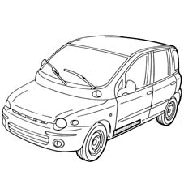
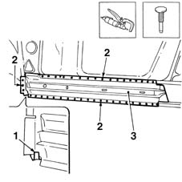
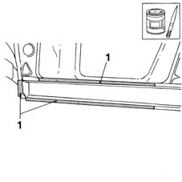
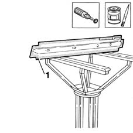
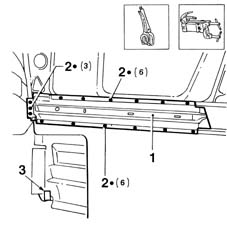
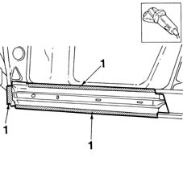
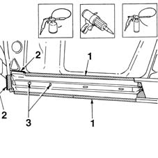

7210B15 R.R. UNDERDOOR SIDE MEMBER
- Path
- Procedures > 72 PANELS AND FRAME > 7210 REMOVING REFITTING > 7210B structure elements-central and rear part > 7210B15 R.R. UNDERDOOR SIDE MEMBER
- Kind
- repair procedure (removal / refitting; the operation number is the code)
- Applies to
- all engines; all production periods
- Interactive page
- https://sloeber94.github.io/elrnDB-fMltpl/en/#/2892311
Applies to: all engines; all production periods
 Removing
Removing
 Refitting
RefittingCheck if any of the connected parts are deformed by checking body alignment dimensions. Use appropriate measurement tools (reference rigs, templates or gauges).
Straighten the body if necessary.

Applies to: all engines; all production periods
Use a grinding wheel to expose the spot welds.
1. Open the lug securing the floor to the frame, shown in the figure.
2. Use a chamfering machine to remove the weld spots shown in the figure.
3. Use a hammer and chisel to remove the frame from the car.

Applies to: all engines; all production periods
Correct any deformations in the panel using a hammer and profiled stake.
1. Apply the electroweldable paint finish to the areas shown in the figure.

Applies to: all engines; all production periods
Refitting
RemovingUse a rotary brush to remove the rust-proofing from the inner and outer edges of the part.
1. Apply the electroweldable paint finish.

Applies to: all engines; all production periods
1. Position the part correctly on the car and secure using self-locking grippers.
2. Use a spot welder and weld the areas shown in the figure.
3. Attach the floor lug to the frame.

Applies to: all engines; all production periods
1. Correct any deformations in the panel using a profiled stake and mallet.
Use a grinding wheel to remove the spot weld residues.

Applies to: all engines; all production periods
1. Apply rust-proofing to newly-welded areas.
2. Apply sealant along the join lines between the part and car.
3. Apply wax oil inside the rear wing.

Applies to: all engines; all production periods
Refit all fouling parts.